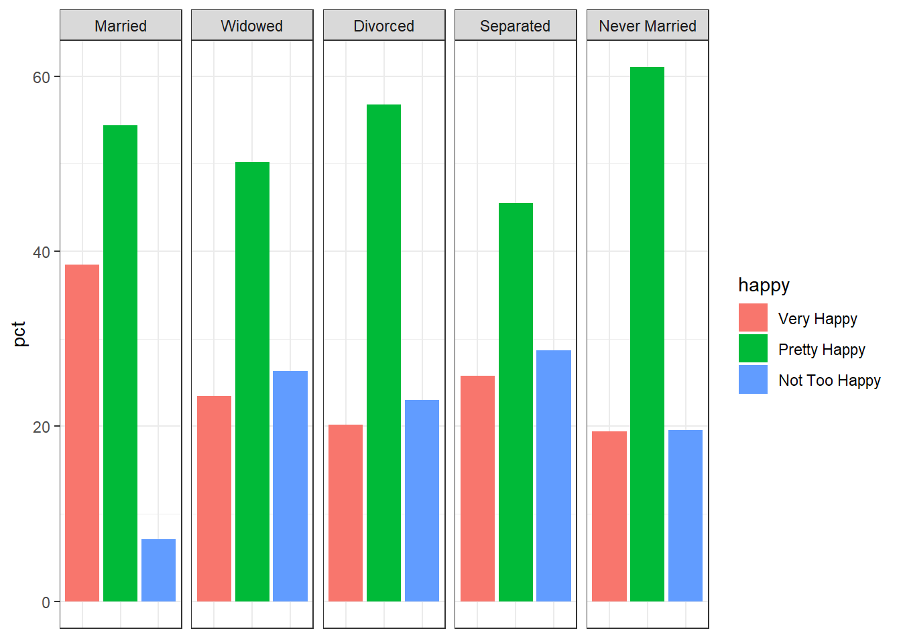

# Loading packages
library(socviz)
library(tidyverse)7 Linear Regression and Inference for Categorical Data
This chapter is split into two parts. We’ll first continue where we left off in the last chapter, covering additional topics related to linear regressions. We’ll then cover the implementation of an inferential method used to test relationships between categorical variables.
7.1 Categorical Variables in OLS Regressions
As discussed at the end of the previous chapter and in class, multiple or multivariable regression allows us to measure the linear relationship between an independent and dependent variable while holding other variables constant. We can, for example, see whether a positive linear relationship between years of education and wages holds after accounting for other labor market characteristics like experience, job tenure, or sex. This is straightforward for variables like experience and job tenure, which are measured in years, but you might wonder how this is possible for sex, which is categorical rather than quantitative.
Fortunately, categorical variables can and often are used in regression models. Because the math behind regression requires numbers to calculate the necessary coefficients, however, they must be transformed into nominally quantitative variables first.
As an example, let’s say that we want to know whether there is a relationship between religious affiliation and fertility (i.e., the number of children you have). More specifically, let’s say that we have reason to believe that Catholics tend to have more children. We could test this using GSS data. For this exercise, we’ll use a subset of GSS data from the socviz package. As usual, we might consider the question descriptively at first:
# Storing the data
gss <- gss_sm
# Summarizing religious affiliation by mean number of children
gss %>%
group_by(religion) %>%
summarize(mean_child = mean(childs, na.rm = TRUE),
n = n())# A tibble: 6 × 3
religion mean_child n
<fct> <dbl> <int>
1 Protestant 2.02 1371
2 Catholic 2.06 649
3 Jewish 1.71 51
4 None 1.41 619
5 Other 1.32 159
6 <NA> 2.25 18At first glance, based on the table above, it does appear that Catholics tend to have more children. It’s not a large difference compared to some other religious affiliation groups, however. Since our question implied that we were interested in the comparison between Catholics and all other religious affiliations, let’s check that comparison as well.
To do this, we’ll need to group by a new variable, which indicates whether a respondent is Catholic or not.
# In previous lessons, we've used case_match() together with mutate() to re-code
# values. Another option you might see elsewhere is ifelse(). The first
# argument in ifelse() is the logic condition to be checked, the second is the
# value output if the condition is true, and the third is the value output if
# the condition is false.
gss %>%
mutate(catholic = ifelse(religion == "Catholic",
"Yes",
"No")) -> gssNow we can repeat the previous summary table, this time grouping by the new catholic variable:
gss %>%
group_by(catholic) %>%
summarize(mean_child = mean(childs, na.rm = TRUE),
n = n())# A tibble: 3 × 3
catholic mean_child n
<chr> <dbl> <int>
1 No 1.79 2200
2 Yes 2.06 649
3 <NA> 2.25 18Those who identified as Catholic appear to have more children on average than non-Catholics. We don’t know whether the difference here is due to random chance or not though. To test this, we could use a simple test called a two sample t-test for the difference in means, but since we may wish to control for other variables, a regression would be the better tool.
As mentioned before, before we can test the relationship between being Catholic and number of children, we need to transform catholic from a categorical (character) variable into a quantitative (numeric) variable. The most logical way to do this is to create a binary variable, where \(1\) represents being Catholic and \(0\) represents not being Catholic.
The resulting model takes the form:
\(\widehat{\textit{children}_{i}}=\hat{\beta}_{0}+\hat{\beta}_{1}\textit{catholic}_{i}\)
Where \(\textit{catholic}_{i}= 1\) if the respondent is Catholic and \(\textit{catholic}_{i}=0\) if the respondent is not Catholic. \(\widehat{\textit{children}_{i}}\) therefore gives the predicted number of children based on whether the respondent is Catholic or not and \(\hat{\beta}_{1}\) is the estimated effect of being Catholic on the number of children.
We might imagine that other variables could confound the relationship between being Catholic and the number of children, like education-level perhaps or income. Here, for convenience, we’ll only control for age and number of siblings.
To run the regression, we’ll first convert the state of being Catholic into a binary variable. This time, we’ll use case_match():
# Check the distinct values in the religion column
gss %>%
distinct(religion)# A tibble: 6 × 1
religion
<fct>
1 None
2 Catholic
3 Protestant
4 Other
5 Jewish
6 <NA> # Create a vector with non-Catholic entries
non_cath <- c("None", "Protestant", "Other", "Jewish")
# Re-code religion as a binary catholic variable
gss %>%
mutate(catholic = case_match(religion,
"Catholic" ~ 1,
non_cath ~ 0)) -> gss_cathNow, we can run the regression as in the previous chapter:
# Store the regression model and then summarize it
reg <- lm(data = gss_cath, formula = childs ~ age + sibs + catholic)
summary(reg)
Call:
lm(formula = childs ~ age + sibs + catholic, data = gss_cath)
Residuals:
Min 1Q Median 3Q Max
-5.473 -1.033 -0.209 0.843 6.870
Coefficients:
Estimate Std. Error t value Pr(>|t|)
(Intercept) -0.090051 0.088900 -1.013 0.3112
age 0.032417 0.001632 19.858 <2e-16 ***
sibs 0.082623 0.009015 9.166 <2e-16 ***
catholic 0.170653 0.068756 2.482 0.0131 *
---
Signif. codes: 0 '***' 0.001 '**' 0.01 '*' 0.05 '.' 0.1 ' ' 1
Residual standard error: 1.526 on 2826 degrees of freedom
(37 observations deleted due to missingness)
Multiple R-squared: 0.1603, Adjusted R-squared: 0.1594
F-statistic: 179.8 on 3 and 2826 DF, p-value: < 2.2e-16As you can see, on average Catholics appear to have more children than non-Catholics holding age and number of siblings constant. Being Catholic is associated with having approximately 0.17 more children on average than non-Catholics.
Note, of course, that we haven’t checked the usual assumptions for OLS regression. We also haven’t incorporated survey weights to account for the design of the GSS, considered whether other controls should be included, or considered how the 37 observations that were ignored due to missing data might affect our results. In a more rigorous study, we would want to take consider all of these aspects thoroughly. For now though, we will move on.
7.2 Logistic Regression
In both this last example and in the previous chapter, we’ve focused on regression models where the dependent variable is a continuous quantitative variable. What if we want to estimate some categorical outcome, however? What if, for instance, we want to estimate the effect of parental education on the likelihood that an individual will attend college? Or, the likelihood of voting for a particular candidate in an election?
For categorical outcome variables like these (e.g., going to college, voting for a candidate), we might use a different kind of regression called logistic regression. Logistic regression models have some different properties and estimation features compared to standard OLS regression models. In effect, they are a special type of multiple regression which estimate \(\widehat{y}\) values between \(0\) and \(1\).1 This property is particularly useful for estimating the probability of an outcome occurring.2 For a more detailed discussion of logistic regression properties, you might consider reading Chapters 9 and 26 of OpenIntro’s Introduction to Modern Statistics. We’ll focus solely on implementation and interpretation here.
Let’s again use the GSS data. This time, we’ll consider our previous question in a related form: does being Catholic increase the likelihood of having any children? As before, we’ll need to create a binary variable to indicate whether the respondent has any kids.
# Create a binary variable for having children
# Here I'm using a different form of case_match, which is nice for checking
# logical conditions. ifelse() would also work here.
gss_cath %>%
mutate(has_kids = case_when(childs > 0 ~ 1,
childs == 0 ~ 0)) -> gss_cath
#Alternatively:
gss_cath %>%
mutate(has_kids = ifelse(childs > 0, 1, 0)) -> gss_cath
# Check to make sure we re-coded successfully
gss_cath %>%
janitor::tabyl(has_kids, kids) has_kids 0 1 2 3 4+ NA_
0 797 0 0 0 0 0
1 0 459 733 467 403 0
NA 0 0 0 0 0 8Everything looks good. We haven’t accidentally re-coded our NA values (something to watch out for) and only those respondents who report having kids are included in has_kids = 1. Now we can look at the data descriptively again:
# Summarize by catholic and has_kids
gss_cath %>%
group_by(catholic, has_kids) %>%
summarize(n = n()) %>%
mutate(freq = n / sum(n),
pct = round(freq*100,1))`summarise()` has grouped output by 'catholic'. You can override using the
`.groups` argument.# A tibble: 8 × 5
# Groups: catholic [3]
catholic has_kids n freq pct
<dbl> <dbl> <int> <dbl> <dbl>
1 0 0 638 0.29 29
2 0 1 1556 0.707 70.7
3 0 NA 6 0.00273 0.3
4 1 0 154 0.237 23.7
5 1 1 495 0.763 76.3
6 NA 0 5 0.278 27.8
7 NA 1 11 0.611 61.1
8 NA NA 2 0.111 11.1# Alternatively, a nice contingency table using a couple
# of functions from the janitor package:
#gss_cath %>%
# janitor::tabyl(religion, has_kids) %>%
# janitor::adorn_percentages(denominator = 'row')Approximately 76.3% of Catholic respondents reported having any children compared to 70.7% of non-Catholic respondents. Now for the regression, using the same controls as last time:
\(\widehat{\textit{has\_kids}_{i}} = \hat{\beta}_{0} +\hat{\beta}_{1}{\textit{catholic}}_{i} + \hat{\beta}_{2}{\textit{age}}_{i} + \hat{\beta}_{3}{\textit{sibs}}_{i}\)
And, it’s implementation:
# Here we use a slightly different function:
log_reg <- glm(data = gss_cath,
formula = has_kids ~ catholic + age + sibs,
family = binomial)
summary(log_reg)
Call:
glm(formula = has_kids ~ catholic + age + sibs, family = binomial,
data = gss_cath)
Coefficients:
Estimate Std. Error z value Pr(>|z|)
(Intercept) -1.63999 0.14175 -11.569 < 2e-16 ***
catholic 0.18961 0.11190 1.694 0.0902 .
age 0.04920 0.00291 16.905 < 2e-16 ***
sibs 0.08498 0.01669 5.092 3.55e-07 ***
---
Signif. codes: 0 '***' 0.001 '**' 0.01 '*' 0.05 '.' 0.1 ' ' 1
(Dispersion parameter for binomial family taken to be 1)
Null deviance: 3349.7 on 2829 degrees of freedom
Residual deviance: 2947.8 on 2826 degrees of freedom
(37 observations deleted due to missingness)
AIC: 2955.8
Number of Fisher Scoring iterations: 4Here there appears to be no statistically significant relationship between being Catholic and having children (\(p > 0.05\)). If we were to take these results and the previous results at face value (ignoring other considerations about the accuracy of the estimates we’ve obtained, such as improper controls), we might say that Catholics tend to have more children than non-Catholics, but being Catholic doesn’t necessarily mean you are more likely to have children in the first place.
The interpretation of the coefficients is more difficult than in a standard OLS regression. This is due to the different properties of the logistic regression model alluded to earlier. Essentially, these coefficients come to us in the form of what are called log-odds. A 1 year increase in age, in this model, is associated with a 0.049 increase in the log-odds of having children. Similarly, having an additional sibling increases the log-odds of having children by 0.08. But, log-odds don’t have an easily interpretable meaning on their own. To make them interpretable, we can exponentiate them (\(e^x\)), which can be done with the following commands:
exp(coef(log_reg))(Intercept) catholic age sibs
0.1939813 1.2087758 1.0504255 1.0886907 These new coefficients above can now be interpreted as follows: for a 1-year increase in age, the odds of being a parent increase by a factor of 1.05. Imagine, for instance, that a non-Catholic, 25-year old with two siblings has a 25% chance of being a parent. This implies that a non-Catholic, 26-year old with two siblings would have a 26.3% chance of being a parent (\(0.25 * 1.05 = 0.263\)).3 Similarly, if the coefficient for Catholic had been statistically significant, we might have said that being Catholic increases the odds of being a parent by a factor of 1.21.
7.3 Other Regression Forms
There are, of course, other types of regressions not covered here which are suited for a variety of needs. Below are a few commonly used variants in the social sciences (non-exhaustive, of course):
- Ordinal Regression - A form of logistic regression useful for data with ordered categories, often survey results (“On a scale of ‘Strongly Disagree’ to ‘Strongly Agree’…”).
- Multinomial Logistic Regression - Another form of logistic regression useful for unordered categories.
- Linear Probability Model - A standard OLS regression for a categorical outcome variable. See footnote 1.
- Poisson Regression - Used for count data, such as the number of times an event occurs within a given time span.
7.4 Chi-Squared Test for Independence
Linear regression is a versatile enough tool that it used for the majority of social science research questions involving quantitative analysis. Logistic regression, as you just saw, can even handle questions related entirely to categorical variables. It is still worth addressing, even briefly, however, cases where you are interested in determining whether or not there is an association between two categorical variables. For this, we use an inferential method called the chi-squared test for independence.
Returning to the GSS data and a question we had considered earlier in the course, let’s say that we want to know whether there is an association between marital status and reported levels of happiness among U.S. respondents. Essentially, we’ll want to know whether higher proportions of individuals in certain classes of marital status report greater levels of subjective happiness than others. To do this, we’ll want to take a look at a contingency table (also known as a cross-tab).
To make our lives easier, we’ll create one by loading the janitor package and using tabyl():
# install.packages('janitor')
library(janitor)
Attaching package: 'janitor'The following objects are masked from 'package:stats':
chisq.test, fisher.testgss %>%
tabyl(marital, happy) marital Very Happy Pretty Happy Not Too Happy NA_
Married 465 657 86 4
Widowed 59 126 66 0
Divorced 100 281 114 0
Separated 26 46 29 1
Never Married 156 490 157 3
<NA> 0 1 0 0The table above shows the raw count of respondents in each category. We can see, for example, that 465 individuals are married and report being “very happy.” 126 respondents who are widowed, similarly, report being “pretty happy.” Counts, of course, are not particularly helpful for comparing values across categories - especially when we don’t have totals we can compare them against. We can add totals with the following addition from janitor:
gss %>%
tabyl(marital, happy) %>%
adorn_totals(where = c("row", "col")) marital Very Happy Pretty Happy Not Too Happy NA_ Total
Married 465 657 86 4 1212
Widowed 59 126 66 0 251
Divorced 100 281 114 0 495
Separated 26 46 29 1 102
Never Married 156 490 157 3 806
<NA> 0 1 0 0 1
Total 806 1601 452 8 2867Now, we can see that 251 individuals are widowed in total and 806 individuals in total reported being very happy. We could start to do the math ourselves here to compare across categories. Or we could let janitor do the work for us:
gss %>%
tabyl(marital, happy) %>%
adorn_totals(where = c("row", "col")) %>%
adorn_percentages(denominator = "row") # Try "col" or "all" as the argument. marital Very Happy Pretty Happy Not Too Happy NA_ Total
Married 0.3836634 0.5420792 0.0709571 0.003300330 1
Widowed 0.2350598 0.5019920 0.2629482 0.000000000 1
Divorced 0.2020202 0.5676768 0.2303030 0.000000000 1
Separated 0.2549020 0.4509804 0.2843137 0.009803922 1
Never Married 0.1935484 0.6079404 0.1947891 0.003722084 1
<NA> 0.0000000 1.0000000 0.0000000 0.000000000 1
Total 0.2811301 0.5584234 0.1576561 0.002790373 1Notice, the argument in adorn_percentages() allows us to specify how we’d like to calculate the percentages. If we want to see, for example, how the percentage of married individuals who report being “very happy” compares to the percentage of widowed individuals who report being “very happy”, then the current command (where the denominator is specified as being row) probably makes the most sense. As can be seen, 38.5% of married individuals report being “very happy” compared to 23.5% of widowed individuals.
7.4.1 Missing Data
At this point, it is worth pausing to note that we have some missing values which will cause problems with our analysis later on. In general, the choice of what to do with missing values depends on the particular case. In some cases, we might pursue a strategy of list-wise deletion, for example, in which we delete all rows missing data for any variables. In other cases, we might use imputation methods, which generate generate substitute values for missing data. In this particular case, we’re just going to remove the 9 missing values across the two variables.
The key concern here is whether the dropped data is going to bias our estimates in some way. This isn’t necessarily a function of the number of missing values dropped (which in this case is small), but as to whether those missing values are unlike the values that were retained in some important way.
# Dropping NAs for marital and happy
gss %>%
drop_na(marital, happy) -> gss_no_na7.4.2 Bar Graph
Naturally, for large amounts of data like in the previous table, a data visualization might aid in identifying patterns. Here we’ll use a special ggplot2 function, facet_grid(), which allows for the creation of multiple plots across some dimension (in this case, it creates separate bar plots by marital).
# Summarize the counts and proportions in a tidy format
gss_no_na %>%
group_by(marital, happy) %>%
summarize(n = n()) %>%
mutate(freq = n / sum(n),
pct = (freq*100)) -> happy_by_marit`summarise()` has grouped output by 'marital'. You can override using the
`.groups` argument.# Use the tidy data to create a graph.
# Note: the theme at the bottom remove repeated labels for the bars.
happy_by_marit %>%
ggplot(aes(x = happy,
y = pct,
fill = happy)) +
geom_col() +
facet_grid(~marital) + labs(x=NULL) + theme_bw() +
theme(axis.title.x=element_blank(),
axis.text.x=element_blank(),
axis.ticks.x=element_blank())
The graph above doesn’t show a very clear relationship. We can see that married respondents report greater levels of combined happiness, but beyond this, it is a bit of a muddle.
To test more definitively whether there is an association between marital status and reported happiness, we can use the chi-squared test for independence. Chi-squared tests essentially allow you to determine whether the distribution of the categorical variables we saw across the contingency table is due to random chance alone or whether it is evidence of an association between the two variables (marit and happy). The null hypothesis is that there is no relationship between the two variables and the alternative hypothesis is that there is a relationship between marital status and reported happiness.
Calculating the test statistic required to test this hypothesis follows a relatively straight-forward formula:
\(\chi^2 = \sum \frac{(\text{observed count} - \text{expected count})^2}{\text{expected count}}\)
Where observed count refers to the actual count observed in the contingency table and expected count refers to the count that hypothetically would have been observed if there was no association between the variables. To implement the test, we can use janitor again:
gss_no_na %>%
tabyl(marital, happy) %>%
chisq.test()
Pearson's Chi-squared test
data: .
X-squared = 197.61, df = 8, p-value < 2.2e-16Easy enough! We’ve obtained the chi-squared value (the test statistic) and the p-value. The reported p-value is less than 0.05 and so we can therefore reject the null hypothesis. There is evidence of an association between marital status and reported levels of happiness in this data.
This is essentially all we can say based on the chi-squared results here. Any further interpretation would needs to come from subsequent tests or from descriptive analysis.
7.5 Exercises
Use the gss_sm data set from the socviz package to complete the following:
Create a variable to indicate whether a respondent’s father graduated from college or not (bachelor’s degree or higher) using
padeg. Then, create a variable to indicate whether a respondent’s mother graduated from college or not (again, bachelor’s degree or higher) usingmadeg. Then, use a regression to determine whether either had an effect on the respondent’s number of siblings. Interpret your results.Determine whether gender, age, and whether the respondent voted for Obama have an effect on support for marijuana legalization.
Determine whether there is an association between political views (
polviews) and gender (sex).
It’s worth noting that the standard OLS model can also be used for categorical outcome variables. The difference between standard OLS and logistic regression, however, is that standard OLS can estimate beyond \({\{0,1\}}\). This can sometimes be a problem when estimating probabilities, since probabilities are also bounded between \({\{0,1\}}\). When used in this way, the standard OLS model is known as a linear probability model. These models have the benefit of being easier to interpret than logistic regression.↩︎
It’s also why logistic regression is a common machine learning technique.↩︎
You can imagine that this doesn’t make a lot of sense, since at some point, increases in age may decrease the likelihood of being a parent. This implies some non-linearity, which is not present in the model used here. To introduce this non-linearity, essentially what you would do is add a quadratic term (and possibly even a cubic or quartic term) to the equation for age, such that the model might look more like this: \(\widehat{\textit{has\_kids}}_{i} = \hat{\beta}_{0} +\hat{\beta}_{1}\textit{catholic}_{i} + \hat{\beta}_{2}{\textit{age}}_{i} + \hat{\beta}_{3}{\textit{age}_{i}}^2 + \hat{\beta}_{5}\textit{sibs}_{i}\)↩︎